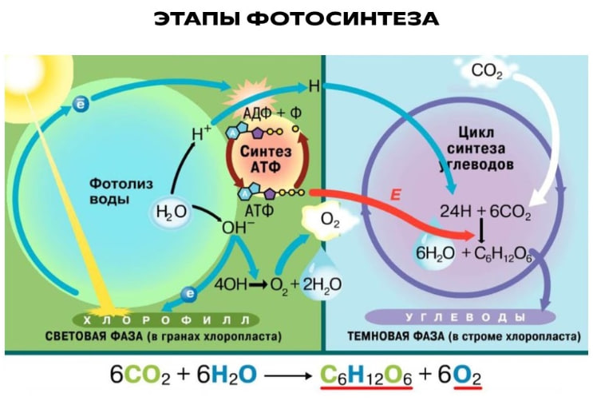

Обмен веществ и преобразование энергии в организме
Метаболизм - совокупность всех химических реакций в клетке, обеспечивающих её рост, развитие и жизнедеятельность.
Введение
Обмен веществ (метаболизм) - это совокупность всех химических превращений веществ и энергии в живом организме. Он включает два взаимосвязанных процесса: ассимиляцию (пластический обмен) и диссимиляцию (энергетический обмен).
Благодаря метаболизму организм получает энергию для работы, строит новые структуры, избавляется от ненужных веществ и поддерживает постоянство внутренней среды.

Две стороны метаболизма
🟢 Ассимиляция (пластический обмен)
Совокупность реакций синтеза сложных органических веществ из простых. Идёт с затратой энергии.
- Фотосинтез - синтез глюкозы из CO₂ и H₂O на свету
- Биосинтез белка - сборка молекул белка из аминокислот
- Синтез жиров, углеводов, нуклеиновых кислот
🟠 Диссимиляция (энергетический обмен)
Совокупность реакций распада сложных органических веществ до простых. Идёт с выделением энергии.
- Дыхание - окисление глюкозы с выделением энергии
- Брожение - расщепление глюкозы без кислорода
- Расщепление жиров и белков до CO₂, H₂O, мочевины
Три этапа энергетического обмена
Подготовительный
Где: пищеварительная система и лизосомы.
Сложные вещества расщепляются на простые: белки → аминокислоты, жиры → глицерин и жирные кислоты, углеводы → глюкоза.
Энергия выделяется в виде тепла.
Бескислородный (гликолиз)
Где: цитоплазма клетки.
Глюкоза расщепляется до молочной кислоты (у животных) или до спирта (у дрожжей).
Синтезируется 2 молекулы АТФ (≈ 200 кДж).
Кислородный (дыхание)
Где: митохондрии.
Молочная кислота окисляется до CO₂ и H₂O с участием кислорода.
Синтезируется 36 молекул АТФ (≈ 2600 кДж).
Фотосинтез и дыхание - два полюса жизни
🌿 Фотосинтез
Идёт в хлоропластах растений на свету. Из неорганических веществ образуются органические.
Значение: источник органических веществ и кислорода на Земле.
🔥 Дыхание
Идёт в митохондриях всех живых клеток. Органические вещества окисляются с выделением энергии.
Значение: снабжение клетки энергией в виде АТФ.
⚡ Роль АТФ - универсального источника энергии
АТФ (аденозинтрифосфорная кислота) - универсальный аккумулятор энергии в клетке. Состоит из азотистого основания аденина, рибозы и трёх остатков фосфорной кислоты.
- При отщеплении одного остатка фосфорной кислоты выделяется ≈ 40 кДж/моль энергии.
- Образуется АДФ + фосфат + энергия.
- Обратный процесс - синтез АТФ - происходит при дыхании и фотосинтезе.
- АТФ расходуется на рост, движение, синтез веществ, передачу нервных импульсов.
Сравнительная таблица
| Признак | Ассимиляция | Диссимиляция |
|---|---|---|
| Суть процесса | Синтез сложных веществ из простых | Распад сложных веществ до простых |
| Энергия | Затрачивается | Выделяется |
| Где происходит | Рибосомы, хлоропласты, аппарат Гольджи | Цитоплазма, митохондрии, лизосомы |
| Примеры | Фотосинтез, биосинтез белка | Дыхание, брожение, гликолиз |
| Результат | Образование органических веществ тела | Получение энергии (АТФ) и удаление отходов |
💡 Главное запомнить
- Метаболизм = ассимиляция + диссимиляция - два взаимосвязанных процесса.
- Ассимиляция идёт с затратой энергии, диссимиляция - с выделением.
- Универсальный посредник энергии - АТФ.
- Итог дыхания: 36 АТФ (кислородный этап) + 2 АТФ (гликолиз) = 38 АТФ.
- Фотосинтез и дыхание - основа круговорота веществ и энергии в биосфере.